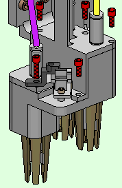
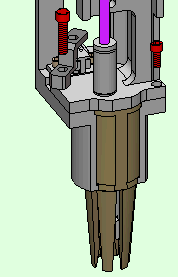
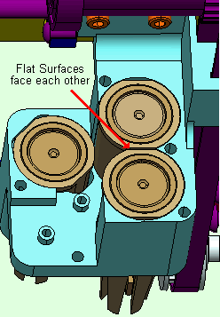

This procedure describes how to remove and install a pick-and-place collet on any pick-and-place module.
Prepare the instrument.
Note: Replacing the collets can be done from the front of the instrument. Removal of the rear instrument cover is not required.
Open the upper left and right front instrument covers.
Set the All DC power (except CPU and reagent coolers) switch on the Power Distribution PCB to the Off position to remove power from the motors.
Remove the pick-and-place collets.
Position the carriage assembly to gain access to the collet.
Wash: All the way to the front.
Incubator: All the way to the right, near the substrate probe, and push the aspirate probe plate down to improve access.
Sample: Just to the right of the bulk feeder.
Loosen the two screws holding the cable guide to the front of the pick-and-place carriage.
Remove the screws holding the pick-and-place top cover to the carriage (Inc, Wash, or Dual: two screws, Sample: five screws, 3/32-in hex).
Note:
Leave the screws in their holes, if possible, for easier reassembly.
For the sample pick-and-place, reach around the left side of the bulk feeder with your left hand to manipulate the pick-and-place cover while replacing the collet with your right hand.
For the incubator pick-and-place, reach in near the reagent pipettor with your left hand and near the substrate probe with your right hand.
Figure 322: Sample pick-and-place

Figure 323: Incubator or wash pick-and-place

Slide the service loop ribbon cable down through the cable guide, and then carefully move the pick-and-place top cover and cable guide upward and to the side. Leave the ribbon cable connected to the sensor PCB.
Note: The ribbon cable can be disconnected if needed, but reconnecting it to the sensor PCB can be difficult.
Remove the collet from the carriage by pushing it upward, out of its mount.
Note: Be careful not to lose the o-ring mounted on the top cover of the pick-and-place above each collet.
Install the pick-and-place collets.
Place the new collet into the pick-and-place carriage.
Note:
For the RV and DV collets, ensure that the eject sensor will touch the collet when the collet is in place.
Rotate the collet so that the flat sides allow the collet to seat fully into the carriage.

Move the top cover of the collet back over the carriage, while sliding the ribbon cable back up through the cable guide.
Note: Be careful not to lose the o-ring seated in the cover above each collet.
Install the screws holding the pick-and-place top cover to the carriage (Inc, Wash, or Dual: two screws, Sample: five screws, 3/32-in hex).
Note:
Use a ball-driver tip Allen wrench, and be careful not to cross-thread the screws.
Connect the service cable connection to the sensor PCB, if it was disconnected.
Tighten the two mounting screws on the cable guide.
Note: Match the height of the strain relief loop on the service loop ribbon cable to the strain relief loop on the air tubing before tightening the screws on the cable guide.
Move the "All DC power (except CPU and reagent coolers)" switch to the On position to restore power to the motors.
Remove any cover interlock switch bypass tools and close the upper left and upper right front instrument covers.
Verify the proper operation of the instrument.
Initialize the instrument.
Note:Vessel failed to eject errors, where the eject piston does not move downward when air is applied, can be caused by a missing o-ring between the collet and the cover on the pick and-place or by improper seating of the pick and-place assembly top cover.
Perform 100 reps of the vessel exerciser for the pick and-place that was serviced.
Perform QC and ensure that customer specifications are met.